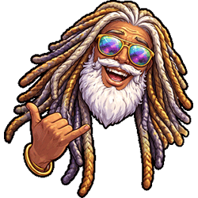

Save these numbers in your phone before you land. South Africa's emergency services run on a two-tier system — state services cover the whole country but response times vary enormously; private services are faster and are what you use if you have travel insurance. Know the difference before something goes wrong.
South Africa is a big country — Johannesburg to Cape Town is roughly the same distance as London to Marrakech — and getting between major destinations requires a plan. The good news is that the options are varied, reasonably priced, and well-suited to different styles of travel. The consistent rule across all of them: do not travel after dark.
South African food is one of the great undiscussed pleasures of travelling in the country. The produce is exceptional, the meat culture is serious, the wine is world-class at a fraction of what you'd pay for it in Europe, and the tradition of the braai — the South African barbecue, which is less a cooking method than a social institution — means that self-catering here produces better meals than most restaurants do back home. Eat well. It won't cost much.
South Africa has twelve official languages — a fact that sounds overwhelming until you realise that English functions as the common language across virtually all of them. You will get by perfectly well on English for the entire trip. What the local languages and slang give you is something more valuable than utility: they are the fastest route to a genuine human response from the people you meet. A single word of Zulu in KwaZulu-Natal, or a dankie in the Karoo, lands differently than anything in English.
There is an unspoken ritual in backpacker hostels. You arrive dusty and tired, drop your pack, grab something cold, and head to the common area. There, a group of strangers from six different continents stares back at you. The air is thick with icebreaker questions: Where are you from? Where are you going? How long have you been travelling? By the third hostel, your brain starts to melt. This is where games come in. In a South African hostel — where loadshedding kills the Wi-Fi and a communal braai is always an hour away from being ready — a deck of cards or a pool table is the ultimate social lubricant. It bypasses the small talk entirely and dives straight into personality: who is the liar, who is the strategist, who is the person who knocks over the Jenga tower and owes everyone a round?
South Africa is not a monolithic culture — it is at least a dozen cultures occupying the same country, each with its own norms, its own history, and its own expectations of visitors. What they broadly share is a high value placed on greeting, on respect for elders, and on the acknowledgement of other people's humanity before getting to the point of any interaction. Getting this right costs nothing and opens doors that staying in tourist-mode keeps firmly shut.
South Africa is the natural hub of southern African overland travel — a well-developed infrastructure base from which backpackers fan out into some of the most extraordinary countries on the continent. Mozambique, Namibia, Botswana, Zimbabwe, Eswatini, and Lesotho are all reachable overland in under a day from various South African cities. Here is what you need to know about each route.
Mozambique is the most popular onward destination for backpackers leaving South Africa, and for good reason: a 2,500-kilometre Indian Ocean coastline of extraordinary beauty, warm water, world-class diving, beach camps, and a Portuguese colonial culture that gives the food and the cities a character unlike anywhere else in southern Africa. The most popular backpacker destination is Praia de Tofo (Tofo Beach) near Inhambane — a small beach village with excellent diving, whale sharks, and a well-established backpacker scene. Maputo, the capital, is the entry point from the south and worth a day or two in its own right.
Malaria warning: Mozambique is a malaria zone. Prophylaxis is strongly recommended for all visits. Read the medical advice on our Advice page before travelling. This is not optional information — malaria in Mozambique is real, common, and serious.
The best route from Durban to Maputo is through Eswatini rather than directly across the border at Ponta do Ouro. The Eswatini route is better-maintained road, more straightforward to navigate, and passes through the beautiful Swazi highlands — a worthwhile experience in itself. The border sequence is:
South Africa → Eswatini: Cross at Golela/Lavumisa (open 07:00–22:00). From Durban take the N2 south and then the R69 northeast toward Golela — allow approximately 3 hours from central Durban to the border.
Eswatini → Mozambique: Cross at Lomahasha (Eswatini) / Namaacha (Mozambique) (open 07:00–midnight). This is the main Eswatini–Mozambique crossing, busy but efficient — movement through the border typically takes around 10 minutes per vehicle outside of holiday periods. From Namaacha it is approximately 82 kilometres to Maputo on mostly tar road.
Visa note: Most nationalities require a visa for Mozambique. Visas are available on arrival at the Namaacha border post and at Maputo's Maputo International Airport. Carry a printed copy of your accommodation booking confirmation and a return/onward ticket — border officials may ask for these. Passport must have at least 6 months' validity remaining. South African, Zambian, Zimbabwean, and several other SADC nationals do not require visas; check your nationality's requirements before travel.
From Johannesburg, the direct route to Mozambique runs east through Mpumalanga and the Kruger National Park corridor, crossing at Komatipoort/Ressano Garcia (also called the Lebombo border post) — the busiest South Africa–Mozambique crossing, open 24 hours. From Johannesburg take the N4 east through Nelspruit (Mbombela) to Komatipoort. The crossing is about 5.5 hours from Johannesburg. From Ressano Garcia it is approximately 88 kilometres to Maputo.
The alternative Joburg route via Eswatini crosses at Oshoek (South Africa) / Ngwenya (Eswatini) — the 24-hour crossing on the N17 from Johannesburg, approximately 3.5 hours from the city. From Ngwenya, traverse Eswatini to the Lomahasha/Namaacha crossing described above. This route adds time but takes you through Eswatini, which is a country worth experiencing rather than merely transiting.
The go-to backpacker base in Maputo for two decades has been Fatima's Place on Avenida Mao Tse Tung — centrally located near the embassy district, good community atmosphere, bar, clean rooms, and an English-speaking staff with deep knowledge of onward travel logistics. It is not the cheapest or the most polished option in Maputo, but it has an established reputation and the kind of accumulated local knowledge that comes from decades of hosting travellers. Cash only — carry meticais or US dollars; card payment is unreliable.
Fatima's also operates a daily chapa (minibus) service to Tofo Beach departing at approximately 04:00–05:00. Note on the Tofo shuttle: this is a shared chapa that picks up additional passengers en route from the Junta bus terminal — it is not an exclusive private transfer. Journey time is 10–12 hours. It picks you up from the hostel door, which is a genuine logistical convenience, but manage your expectations about the comfort of a long shared minibus journey with luggage. The alternative is the Etrago coach, which departs from Maputo's Junta bus station earlier and is generally faster, more comfortable, and cheaper — but does not run on Sundays. For Tofo on a Sunday, the Fatima's chapa is the practical option.
Important update: Fatima's Nest — the sister hostel at Tofo Beach that was the natural complement to the Maputo base — closed in June 2024. Tofo has multiple other backpacker options; ask at Fatima's Maputo for current recommendations before you travel.
Praia de Tofo is a genuinely wonderful place: a small beach village built around world-class diving, whale sharks, and an easy, warm-water lifestyle that has been drawing backpackers for decades. The whale sharks at Tofo are resident year-round, not seasonal — this is one of the most reliable places on earth to dive or snorkel with them. Expect warm water, white sand, cold Dois M beer, and the strong possibility that you will extend your stay by several days without fully understanding why.
Namibia is the most spectacular road trip destination in southern Africa — a country of extraordinary, austere beauty where the landscapes are so vast and so empty that the experience of driving through them resets your understanding of what a desert can be. The Namib Desert. Sossusvlei's orange dunes. The Fish River Canyon — the second largest canyon in the world, 160 kilometres long and 550 metres deep. The Skeleton Coast, where fog rolls in from the cold Atlantic and shipwrecks rust on beaches no one visits. Etosha National Park, where game congregates around floodlit waterholes at night and the lions are visible from a lodge veranda. Namibia does not look like the rest of Africa. It looks like nothing else.
The border crossing from South Africa into Namibia is at Vioolsdrift (South Africa) / Noordoewer (Namibia) on the Orange River — the main road crossing on the N7 from Cape Town, approximately 7 hours north of the city. From Johannesburg the main crossing is at Nakop (South Africa) / Ariamsvlei (Namibia) on the N10, approximately 7 hours from Johannesburg.
Stop-off: The Growcery Camp, Richtersveld
If you are approaching Namibia from Cape Town on the N7, a genuinely excellent stop-off before or after the crossing is The Growcery Camp — an eco-camp on the banks of the Orange River, 22 kilometres from the Vioolsdrift/Noordoewer border post, in the Richtersveld. The Richtersveld is South Africa's only mountain desert — a UNESCO World Heritage landscape of extraordinary volcanic rock formations, ancient succulents, and the Orange River winding through it all. The Growcery Camp sits on the river bank, adjacent to the Richtersveld and Nababeep community reserves, and markets itself as the perfect en-route stopover for travellers going to or from Namibia. Grassed campsites, eco-showers, home-cooked meals, river rafting and kayaking trails, and a thousand-star sky with no light pollution. It is, by most accounts, the correct place to stop and recalibrate between the city and the desert.
Note: a 4x4 vehicle is required for the track into the camp (22km of gravel road from the border post). Standard hire cars cannot access it — if you are in a 2WD hire car, the camp is not accessible. Plan accordingly or confirm current access conditions directly with the camp before arrival.
Namibia practicalities in brief: No visa required for most Western nationalities for stays under 90 days. Namibian dollar pegged 1:1 to the South African rand — South African rand is accepted throughout Namibia. Self-drive is the only practical way to see the country; hire cars are available in Windhoek and at the main crossing points. Malaria risk in the north (Etosha, Caprivi Strip) — prophylaxis recommended for those areas. No malaria risk in the south (Sossusvlei, Fish River Canyon, Lüderitz, Swakopmund).
Botswana is Africa's great wildlife destination for people who are tired of crowds — a country that has deliberately pursued high-cost, low-volume tourism in its most celebrated areas (the Okavango Delta, the Chobe National Park), meaning that the wilderness experiences here are more authentic and less trafficked than in many of the continent's other game areas. It is also one of the most politically stable, well-governed, and prosperous countries in sub-Saharan Africa — a fact that reflects both the country's diamond wealth and a post-independence governance track record that is genuinely rare on the continent.
The main border crossings from South Africa into Botswana are at Tlokweng/Pioneer Gate near Gaborone (the capital, 3 hours from Johannesburg), Ramatlabama near Mahikeng, and Martins Drift/Groblers Bridge in the Limpopo north of Johannesburg for those heading toward the Tuli Block and the northeastern game areas. For the Okavango Delta and Maun (the tourism hub), most travellers fly from Johannesburg — road access is possible but very long.
Chobe National Park — famous for the largest elephant population of any park in Africa, and for boat safaris on the Chobe River where elephants swim across the channel in front of you — is accessible by road from Victoria Falls (Zimbabwe) and from Kasane on the Botswana border, making it a natural addition to a Zimbabwe-Botswana-Zambia circuit.
Botswana practicalities in brief: No visa required for most Western and Commonwealth nationalities for stays under 30–90 days (verify your nationality's requirements). The Botswana pula is the currency; South African rand is not universally accepted outside border areas. Malaria risk in the north (Okavango, Chobe) — prophylaxis recommended. No malaria risk in the south (Gaborone, Kgalagadi Transfrontier Park). The Kgalagadi Transfrontier Park — straddling the Botswana/South Africa border in the Kalahari — is accessible by 2WD in the South African section and requires 4x4 in the Botswana section, and is one of the finest predator-watching parks in Africa for those willing to manage the logistics.
Zimbabwe has Victoria Falls. This is, in itself, sufficient reason to go. The largest waterfall in the world by combined width and height — Mosi-oa-Tunya, "the smoke that thunders" in Tonga — is one of those natural spectacles that no photograph or description adequately prepares you for. In full flood (February to April) the spray column rises 400 metres and is visible from 50 kilometres away. The sound alone is something. Victoria Falls is accessible from both the Zimbabwe side (Victoria Falls town) and the Zambia side (Livingstone), and most travellers do both — the KAZA visa allows entry to both Zimbabwe and Zambia on a single document, making the circuit straightforward.
Beyond Victoria Falls: the ruins of Great Zimbabwe (a medieval stone city of extraordinary scale, the origin of the country's name), Hwange National Park (lions, wild dogs, the largest elephant herds in the country), Lake Kariba (an inland sea created by one of the world's great dams, with houseboat safaris and the flooded ghost forests of the Matusadona shoreline), and the Eastern Highlands (misty mountains on the Mozambique border, waterfalls, trout fishing, colonial hill stations).
Getting there from South Africa: The main overland crossing from South Africa into Zimbabwe is at Beit Bridge — on the N1/N11 where the Limpopo River forms the border, approximately 6 hours north of Johannesburg. Beit Bridge is one of the busiest land borders in Africa and queues can be very long, particularly at weekends and holiday periods. Crossing mid-week and early in the morning significantly reduces waiting time. Allow a full day for the Joburg–Victoria Falls drive including the border crossing.
Is Zimbabwe safe for UK tourists? The short answer is yes, with awareness. Zimbabwe is generally considered safe for tourists in 2025, requiring awareness and common sense. The UK Foreign, Commonwealth and Development Office (FCDO) advises exercising caution — primarily citing petty crime in urban areas, occasional political demonstrations, and economic unpredictability — but this advice is not materially different from the advice issued for many popular tourist destinations globally. The vast majority of travellers visit Zimbabwe without incident.
A few things UK travellers specifically should know: Zimbabwe's political history with the UK is complicated. The land reform programme of the early 2000s — under which white-owned farms were seized and redistributed — was a direct source of conflict between the Mugabe government and London, and sanctions were imposed. That specific period of intense hostility has receded, but demonstrations and rallies can be unpredictable and may turn violent, and authorities have in the past used force to suppress them. Avoid political gatherings entirely. Do not make political comments in public — criticising the president is illegal under Zimbabwean law. This is not a threat directed at British tourists specifically; it is general legal reality that applies to everyone in the country.
Practically: British passport holders require an eVisa or visa on arrival to enter Zimbabwe. Apply for the eVisa before travel through the Zimbabwe e-Visa portal — allow at least 10 business days for processing. The KAZA univisa covers both Zimbabwe and Zambia and is available on arrival at Victoria Falls and selected other entry points. US dollars are the de facto currency for tourist transactions — Zimbabwe has a multi-currency system and you can use US dollars for most transactions. Carry small denomination notes; change is scarce.
Malaria note: Malaria risk in Zimbabwe is high throughout the year but highest from November to June in areas below 1,200 metres, including the Zambezi Valley and Victoria Falls. Prophylaxis is strongly recommended for Victoria Falls, Hwange, Kariba, and the Zambezi Valley. Low to no risk in Harare and Bulawayo.
Eswatini — officially renamed from Swaziland in 2018, to the traditional name which has always been used by its inhabitants — is the smallest country in the southern hemisphere, entirely landlocked within South Africa's borders (with a small northeastern border with Mozambique). It is worth a day or two in its own right rather than merely transiting through it on the way to Mozambique: a mountainous, culturally distinct kingdom with Swazi reed dance ceremonies, craft markets, the beautiful Mlilwane Wildlife Sanctuary, the Swazi highlands scenery, and a character that is genuinely unlike anywhere in South Africa.
No visa is required for most Western nationalities. The currency is the lilangeni (plural emalangeni), pegged 1:1 to the South African rand — rand is accepted everywhere. No malaria risk in the highlands; some malaria risk in the lower Lubombo area toward the Mozambique border.
The main crossings from South Africa: Oshoek/Ngwenya (24 hours) from Johannesburg on the N17; Golela/Lavumisa (07:00–22:00) from Durban on the N2/R69; Mahamba (07:00–22:00) from the Piet Retief area. From Eswatini into Mozambique: Lomahasha/Namaacha (07:00–midnight) as described above.
Lesotho is the only country in the world entirely surrounded by another country — a mountain kingdom completely enclosed within South Africa, sitting high above it on the Drakensberg/Maluti plateau. The entire country is above 1,400 metres elevation; most of it is above 2,000 metres. This makes it extraordinary for hiking, pony trekking in the Basotho highlands, and the surreal experience of being in a country that looks and feels nothing like the South Africa immediately around it — a kingdom of stone villages, blanket-wrapped horsemen, and mountain light of remarkable quality.
The main crossing points: Maseru Bridge (the capital, open 24 hours) from the Free State; Sani Pass — the most dramatic entry point, a 4x4-only mountain pass rising through the Drakensberg from KwaZulu-Natal into the Lesotho highlands. The Sani Pass road is one of the great drives in southern Africa and requires a 4x4 with good ground clearance. At the top of the pass (2,874 metres) is the Sani Mountain Lodge, which claims to be the highest pub in Africa — a claim that is either exactly true or a very effective marketing strategy, and either way is worth stopping for.
No visa required for most Western nationalities. The currency is the loti (plural maloti), pegged 1:1 to the South African rand. No malaria risk anywhere in Lesotho. The mountain winters (June–August) are cold — properly cold, with snow possible at altitude.